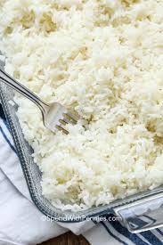

Classic Rice Pilaf

The secret to perfectly cooked rice every time is to bake it in the oven.
Ingredients
- 1 cup jasmine rice (such as Mahatma®)
- 2 tablespoons olive oil
- 2 ¼ cups water
- ¼ cup butter
- 3 cups chicken stock
- 1 teaspoons salt
- 1 teaspoon white vinegar
Steps
- Preheat the oven to 325 degrees F (165 degrees C). Gather all ingredients. Grease a 2 1/2-quart baking dish.
- Pour rice into the prepared baking dish.
- Stir water, butter, salt, and vinegar together in a saucepan over medium heat.
- Bring to a rolling boil, then pour over rice; stir to combine.
- Bake in the preheated oven until water is absorbed and rice is tender, 20 to 25 minutes.
Home